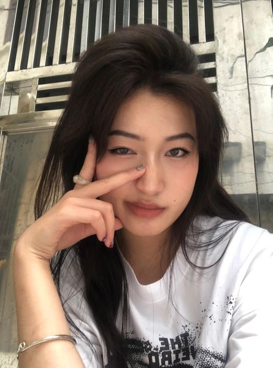

2024 - Hãy viết nên câu chuyện của bạn
Ngày đăng: 25/05/2024
Sau những tổn thương đó, mèo không còn là loài vật mà cô cần quan tâm đến nữa. Cô từng có vài lần cùng hội bạn đến những quán cà-phê thú cưng. Nhìn mấy đứa bạn nâng lên đặt xuống mấy con mèo kiểng lười biếng, gồng lên tạo kiểu cùng đám sinh vật "lắm lông" để có những bức hình đẹp sống ảo, cô chỉ kịp thở dài. Bạn chau mày: "Sao vậy, không thích chụp với mèo à?". Thương cười nhạt, sao phải cố. Là vì cô biết rõ sau cái ôm, cái vuốt ve ấy của đám bạn, chúng phải nhanh chóng lao vào nhà vệ sinh, tẩy sạch mùi mèo bám trên tay, trên quần áo. Yêu động vật kể cũng thật lạ lùng! ★ Đó là một con mèo trắng có vài đốm đen điểm xuyết trên cơ thể. Cô gọi nó là Bò Sữa. Cặp mắt xanh trong suốt của Bò Sữa lúc nào cũng long lanh ngước nhìn cô. Tình nói anh phải năn nỉ nhiều lần bà chủ nhà mới động lòng bán lại con mèo cho anh. - Nó rất đặc biệt. Em có thấy điều đó không? - Em thấy chứ. Nhưng điều đó không có gì đặc biệt. Nếu muốn, mình có thể lấy mầu vẽ lên lông nó cũng được. Tình tiu nghỉu trước vẻ thờ ơ của vợ. Thương làm sao biết được, đâu phải con mèo nào cũng có một nhúm lông mầu đen hình trái tim ngay bên ngực trái rõ ràng và kỳ lạ như con này. Cũng vì trái tim đó mà bà chủ không muốn rời xa nó. "Loại này khôn lắm, thương chủ như thương thân. Cậu cứ nuôi đi rồi biết!". Ánh mắt kia, vẻ ngoan ngoãn đến tội nghiệp kia liệu có khi nào đang đánh lừa cô không? Thương tự nhủ mình không cần quan tâm quá nhiều đến con mèo. Sau một thời gian ngắn, cô ngạc nhiên khi thấy nó có vẻ dài ra, những đốm lông mượt mà hơn, râu cũng dày hơn. Tiếng kêu của con mèo cũng thật kỳ lạ. Nó gầm lên một tràng dài, không léo nhéo như tiếng những con mèo vẫn hay rượt đuổi nhau trên mái nhà mỗi đêm. Khi anh nói sẽ mang mèo về, cô còn hỏi vặn lại anh liệu như vậy có phiền phức quá không? Chỉ cần một cái bẫy, hoặc đơn giản hơn, một miếng keo bán nhan nhản ngoài chợ là sẽ giải quyết được bọn chuột kia mà. Nhưng Tình kiên quyết: "Dù sao thì có một con mèo chạy qua chạy lại trong nhà vẫn vui hơn!". Thương thở dài. Cô chưa thấy niềm vui nào nhú lên kể từ lúc có con mèo trong nhà. Ngoại trừ những khi nó vật được một con chuột nào đó cả gan lục lọi trong gầm bếp. Nhưng cái cách nó ngoạm cổ con chuột đã đứ đừ, vờn qua vờn lại cho đến khi con vật không còn cử động được, rồi tha đến thả ngay dưới chân khiến cô suýt ngất. Rất nhiều ngày sau đó cô không thể nuốt trôi thứ gì khi nhớ đến xác chuột dưới chân mình. Chừng như những chiếc lông xám đang phình ra, đầu nhọn như những chiếc gai xấu xí chỉ chực găm vào chân, phóng thẳng vào người cô. Một cảm giác ớn lạnh chạy dọc sống lưng khiến Thương run rẩy. Con mèo không hề nhận ra những cảm xúc lạ lùng của chủ, thong thả ngoáy chiếc đuôi dài, nằm thõng thượt sau chiến công. ★ Tình lại có một chuyến đi du lịch. Lần này, cũng như bao lần, cô không thể bỏ hết công việc trên công ty chỉ để được tận hưởng thú vui đi đó đây ngao du sơn thủy cùng chồng. Nhưng cô cũng không có lý do gì để ngăn cản anh đi tìm niềm vui của mình. Sau lần Tình chết hụt vì nhiễm Covid-19 nặng, mỗi một ngày trôi qua là anh đều tiếc nuối đến thẫn thờ. Anh nói với cô, em làm ít lại đi, sống nhiều vào. - Em biết trên đời này, thứ gần gũi nhất với mình là gì không? Không phải anh, không phải em, không phải con chúng ta đâu. Mà là cái chết. Cái chết đó! Và rồi đúng như anh nói. Anh đã có những tháng ngày sống nhiều hơn cho chính mình. Bao nhiêu tiền kiếm được đều đắp đổi vào những bữa tiệc tùng thức ngon vật lạ cùng những chuyến du lịch. Một đôi lần cô miễn cưỡng đi cùng chồng nhưng rồi phải nôn ọe thốc tháo khi chứng kiến những món ăn kỳ dị của chồng và hội bạn: thịt thú rừng, rượu huyết, tiết canh… - Có thể nào dừng những việc man rợ đó không? Cô đã gay gắt cự cãi với Tình sau một cuộc rượu huyết. Lẽ nào, người đứng trước lằn ranh sinh tử cuối cùng lại không hề mảy may thương xót một sinh mệnh dẫu chẳng cùng giống người? Tình cũng không còn được tự ý chạm vào người cô. Chỉ cần nghĩ đến những giọt rượu đỏ còn dính trên khóe miệng ngang phè kia là cô nôn thốc tháo. Tình - sau lần đó có lẽ không còn là chồng cô nữa. Anh chỉ là một sinh mệnh từng là chồng cô. Thế thôi. Vậy thì, những niềm vui của anh bây giờ, cô cũng chẳng buồn can thiệp. Để được gì? Hay chỉ chuốc lấy cảm giác gai người khi phải hình dung anh làm gì trong những chuyến đi. Tình làm nghề tự do. Anh chỉ cần đi săn lùng dự án rồi sang lại qua một nhà thầu khác, hưởng phần trăm trên những hợp đồng xây dựng béo bở. Đôi lúc cô nghĩ đời thật bất công. Chồng cô làm mà như chơi, tiền bạc như có chân cứ tự chạy ào vào tài khoản. Còn cô, mang danh trưởng phòng cho oách nhưng cứ phải cày ngày cày đêm bạc mặt ra. Nhiều lần chồng nói, nghỉ đi, anh lo. Nhưng rồi cứ nhớ đến lần chồng chết hụt là cô lại rùng mình. Nói dại, lỡ chồng có mệnh hệ nào, cô nghỉ việc, hai đứa con biết trông cậy vào đâu để sống tiếp? ★ Đang là mùa hè, hai đứa con cô đã tranh thủ nhảy tàu về quê ngoại tận hưởng kỳ nghỉ bên biển xanh, nắng vàng. Cô nhìn con kéo va-li vui vẻ ra khỏi nhà, thấy như chúng kéo cả tuổi mình đi xa. Còn lại một mình, lại là ngày nghỉ, cô quyết định xếp máy tính sang một bên, pha một ly cà-phê nóng, nướng một chiếc bánh sừng bò nhỏ. Lâu rồi, cô đã bỏ quên thói quen uống cà-phê dưới vòm hoa dạ lý. Cây hoa dạ lý Tình trồng từ hồi mới xây nhà. Cô không bận tâm mấy đến vòm hoa. So với những chậu hồng ngoại đầy kiêu sa, sặc sỡ, vòm hoa dạ lý lặng lẽ tỏa bóng mát che một góc sân, không mảy may khoe sắc. Thỉnh thoảng, vào những ngày Tết nhất, cô mới rảnh tay dọn dẹp và ngó nghiêng đến nó. Dạ lý chỉ nở nhiều và tỏa hương nồng nặc vào buổi đêm. Tình nói đó là những ngôi sao có mùi hương. Mặc kệ việc vòm hoa trở nên mờ nhạt vì kém sắc vào ban ngày, anh vẫn mê thứ hương thơm lạ lùng của nó tỏa ra buổi tối. Những thứ có mùi hương anh đều thích. Như lọ nước hoa mùi hổ phách hay mùi cỏ xạ hương mà cô hay dùng. Nhiều lúc anh chỉ muốn tựa mãi vào vai, vào cổ cô để hít đầy thứ mùi quyến luyến đó. Từ sau khi bị cô cự tuyệt vì vụ rượu huyết, vài lần cô bắt gặp chồng thẫn thờ sau cánh cửa phòng làm việc khép hờ. Nhưng cô sẽ không bao giờ để cảm xúc mình bị đánh lừa dễ dàng như vậy. Kê một chiếc bàn nhỏ ở góc sân, dưới vòm dạ lý, cô sẽ thưởng thức bữa sáng của mình ở đó. Con mèo bồn chồn quanh đi quẩn lại trong chiếc chuồng. Mấy hôm trước, nó khiến cô giận khi tha về một con chim sẻ. Con chim tội nghiệp đã mất mạng oan uổng chỉ vì mê mải nhảy nhót trên vòm dạ lý. Con mèo canh sẵn từ bờ tường. Chỉ một cú phóng, chim sẻ nằm gọn trong miệng nó. Và cũng chỉ một cú giật cửa của cô, con mèo phải phủ phục trong chiếc chuồng này, an phận. Nhưng hôm nay nó không hoàn toàn an phận. Nó nằm rạp xuống, im lặng quan sát cô. Cặp mắt của một kẻ săn mồi, sáng quắc. Thôi, bớt trò mèo! Cô nhếch mép cười, chậm rãi nhấp ngụm cà-phê trong khi lướt điện thoại. Nhưng tiếng gầm của con mèo phá vỡ khoảnh khắc đẹp đẽ ấy. Nó giật tung chốt cửa. Rồi phút chốc, cái vật thể đầy lông ấy bay lướt qua cổ cô. Những móng chân khẽ chạm lên bờ vai. Cô bị bất ngờ, rú lên hoảng hốt, ngã vật ra sân. Tiếng mèo gầm chỉ dứt hẳn khi nó nhả cái sợi dây trơn truội, xanh ngắt trong miệng xuống sân. Một con rắn lục đuôi đỏ khá dài nằm bất động. Đến lúc này, cô vẫn không tin nổi con rắn đã lấp ló đâu đó phía trên đầu mình. Có lẽ nó đã bò từ bên ngoài lên bờ tường, bắt lên vòm dạ lý. Mình sẽ ra sao, nếu không có con mèo? Trong cơn hoảng loạn, cô bấm số Tình, như một bản năng. Kiểu gì thì cái con người kia cũng là chồng mình. Nhưng thật lạ là, cô không nói được một lời nào. Chỉ có tiếng Tình dội ngược từ một nơi xa xôi nào đó.
|  | Phạm Ngọc Q | Truyện hay quá mai donate 5k | 25/05/2024 |